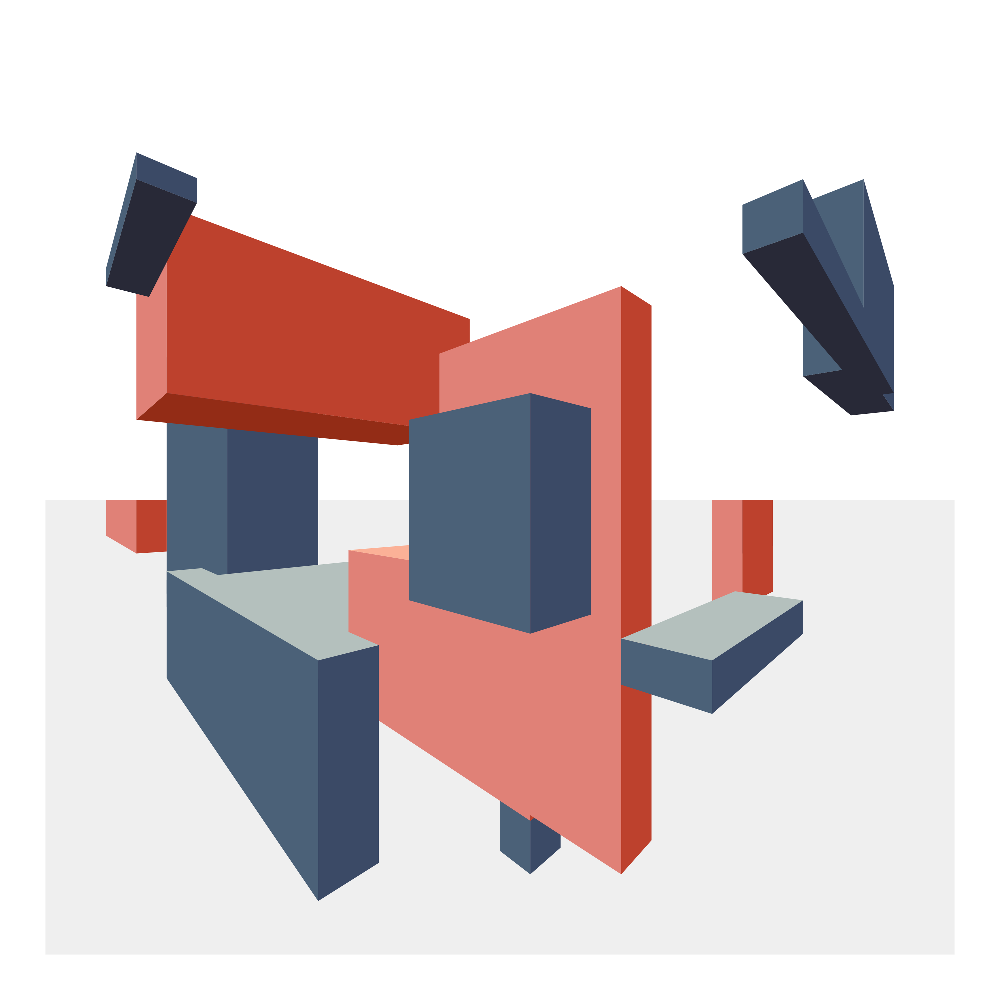
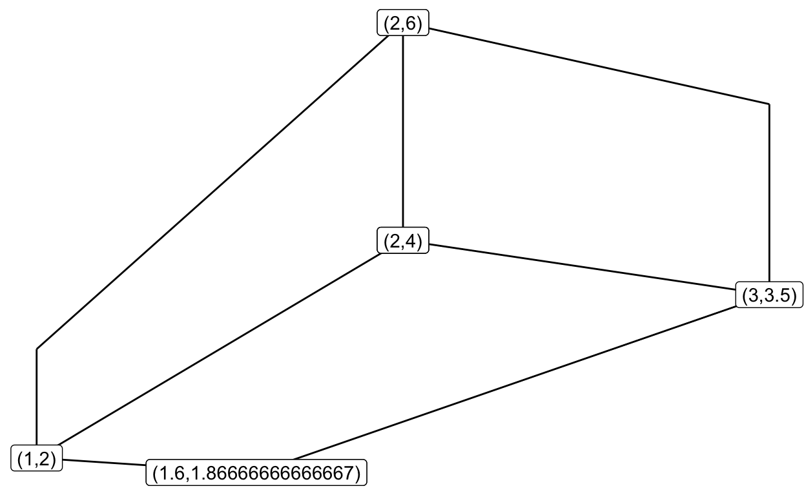

One of my hobbies is quilting, so I designed a quilt in R.
I took up quilting as a creative outlet near the beginning of 2021. After completing a few projects, I decided to make some original designs.
At the same time, I was seeing a lot of amazing #Rtistry projects shared on Twitter.
So, I thought I would try to create some generative art in R and transform it into a quilt!
This endeavor turned into a large project, roughly divided into the following steps:
In this post, I will go through an overview of part 1.
I was inspired by the art of Fred Kaplan, who was my instructor for a couple of continuing education painting classes. Fred has created some fantastic imagined landscapes that feature geometric structures.
I thought I could create some interesting polygons drawn with 2-point perspective in ggplot2. Then, I could use fabrics that suggest a light source with lighter values on some faces and darker values on others.
Here is my final design:

The first thing I set to do was program the creation of some rectangular polygons drawn with 2-point perspective.
This can be achieved with {ggplot2} using geoms like geom_path(), geom_segment(),or geom_polygon().
First, load some packages.
A box is just 7 or 9 segments. To draw a box, you need to specify
You calculate all the segments’ start and stop x and y coordinates from this information. See below the function, make_new_cube, that performs this calculation to make a single box.
make_new_cube <- function(xes, # a vector of three values between (0, vp)
yes, # a vector of two values
vp = 10) {
# pick the vanishing points (y == 0)
vp <- list(c(0, 0), c(vp, 0))
# make the center vertical segment
cube <- data.frame(x = xes[2],
xend = xes[2],
y = yes[1],
yend = yes[2])
# add the left vertical segment
new_row <- c(xes[1],
xes[1],
(yes[1]/xes[2])*xes[1],
(yes[2]/xes[2])*xes[1])
cube <- rbind(cube, new_row)
# add the right vertical segment
new_row <- c(xes[3],
xes[3],
(yes[1]/(xes[2] - vp[[2]][1]))*(xes[3] -xes[2]) + yes[1],
(yes[2]/(xes[2] - vp[[2]][1]))*(xes[3] -xes[2]) + yes[2])
cube <- rbind(cube, new_row)
# add the top lines
new_row <- c(cube[1,1], cube[2,1], cube[1,3], cube[2,3])
cube <- rbind(cube, new_row)
new_row <- c(cube[1,1], cube[3,1], cube[1,3], cube[3,3])
cube <- rbind(cube, new_row)
# add the bottom lines
new_row <- c(cube[1,1], cube[2,1], cube[1,4], cube[2,4])
cube <- rbind(cube, new_row)
new_row <- c(cube[1,1], cube[3,1], cube[1,4], cube[3,4])
cube <- rbind(cube, new_row)
# if all above or below y = 0, then get bottom or top segments
add_top <- all(c(cube$y, cube$yend) < 0)
add_bottom <- all(c(cube$y, cube$yend) > 0)
if (add_top) {
# intersect left bottom [2,3] to right vp and right bottom [3,3] to left vp
left_top <- c(xes[1], max(cube[2,3], cube[2,4])) #left top
right_p <- vp[[2]] # right vp
right_top <- c(xes[3], max(cube[3,3], cube[3,4])) #right top
left_p <- vp[[1]] # left vp
poss_top <- line.line.intersection(left_top, right_p,
right_top, left_p,
interior.only = TRUE)
new_row <- c(poss_top[1], left_top[1], poss_top[2], left_top[2])
cube <- rbind(cube, new_row)
new_row <- c(poss_top[1], right_top[1], poss_top[2], right_top[2])
cube <- rbind(cube, new_row)
}
if (add_bottom) {
# intersect left bottom [2,3] to right vp and right bottom [3,3] to left vp
left_b <- c(xes[1], min(cube[2,3], cube[2,4])) #left bottom
right_p <- vp[[2]] # right vp
right_b <- c(xes[3], min(cube[3,3], cube[3,4])) #right bottom
left_p <- vp[[1]] # left vp
poss_bottom <- line.line.intersection(left_b, right_p,
right_b, left_p, interior.only = TRUE)
new_row <- c(poss_bottom[1], left_b[1], poss_bottom[2], left_b[2])
cube <- rbind(cube, new_row)
new_row <- c(poss_bottom[1], right_b[1], poss_bottom[2], right_b[2])
cube <- rbind(cube, new_row)
}
return(cube)
}
Let’s test this function. It makes a nice data frame with our segments.
new_xes <- c(1, 2, 3) #left, center, right
new_yes <- c(4, 6) # bottom, top of center
new_cube <- make_new_cube(new_xes, new_yes, vp = 10)
new_cube
x xend y yend
1 2.0 2 4.000000 6.00
2 1.0 1 2.000000 3.00
3 3.0 3 3.500000 5.25
4 2.0 1 4.000000 2.00
5 2.0 3 4.000000 3.50
6 2.0 1 6.000000 3.00
7 2.0 3 6.000000 5.25
8 1.6 1 1.866667 2.00
9 1.6 3 1.866667 3.50For the purpose of illustration, I will label the points on the plot.
new_cube %>%
ggplot() +
geom_segment(aes(x = x, y = y, xend = xend, yend = yend)) +
geom_label(aes(x = x, y = y, label = paste0("(",x,",",y,")"))) +
theme_void()

To draw polygons in R where the faces would be colored, I rewrote the above make_new_cube function to be make_new_poly. To make it easier to conceptualize, this function default to a view that goes from (0,0) to (100,100). I also used colors that would suggest a light source, with darker colors on one side and lighter colors on the other.
I then wrote a function save_my_image that
make_new_poly within the input height and width rangesHere is an example:
design <- save_my_image(out_path = NULL, # don't need to save it
height_range = 10:40,
width_range = 20:80,
n_cubes = 3,
n_second_color = 1,
horizon_y = 80)
And another one:
design <- save_my_image(out_path = NULL, # don't need to save it
height_range = 60:80,
width_range = 20:30,
n_cubes = 6,
n_second_color = 2,
horizon_y = 40)
The code is available on GitHub here.
pander::pander(sessionInfo())
R version 4.0.5 (2021-03-31)
Platform: x86_64-apple-darwin17.0 (64-bit)
locale: en_US.UTF-8||en_US.UTF-8||en_US.UTF-8||C||en_US.UTF-8||en_US.UTF-8
attached base packages: stats, graphics, grDevices, utils, datasets, methods and base
other attached packages: retistruct(v.0.6.3), ggplot2(v.3.3.5) and dplyr(v.1.0.5)
loaded via a namespace (and not attached): Rcpp(v.1.0.7), bslib(v.0.2.5.1), compiler(v.4.0.5), pillar(v.1.6.0), jquerylib(v.0.1.4), highr(v.0.9), magic(v.1.6-0), tools(v.4.0.5), digest(v.0.6.29), downlit(v.0.4.0), gtable(v.0.3.0), jsonlite(v.1.7.2), evaluate(v.0.14), memoise(v.2.0.0), lifecycle(v.1.0.0), tibble(v.3.1.0), pkgconfig(v.2.0.3), png(v.0.1-7), rlang(v.0.4.10), DBI(v.1.1.1), distill(v.1.3), yaml(v.2.2.1), xfun(v.0.30), fastmap(v.1.1.0), withr(v.2.4.2), stringr(v.1.4.0), knitr(v.1.37), ttutils(v.1.0-1), htmlwidgets(v.1.5.3), generics(v.0.1.0), vctrs(v.0.3.7), sass(v.0.4.0), grid(v.4.0.5), tidyselect(v.1.1.0), glue(v.1.4.2), R6(v.2.5.0), fansi(v.0.4.2), rgl(v.0.108.3), rmarkdown(v.2.11), pander(v.0.6.3), farver(v.2.1.0), purrr(v.0.3.4), magrittr(v.2.0.1), scales(v.1.1.1), htmltools(v.0.5.1.1), ellipsis(v.0.3.1), abind(v.1.4-5), assertthat(v.0.2.1), colorspace(v.2.0-0), labeling(v.0.4.2), utf8(v.1.2.1), geometry(v.0.4.5), stringi(v.1.5.3), munsell(v.0.5.0), cachem(v.1.0.5) and crayon(v.1.4.1)
If you see mistakes or want to suggest changes, please create an issue on the source repository.
For attribution, please cite this work as
Alice (2022, March 24). Alice Walsh: Quilting with R, part 1. Retrieved from https://awalsh17.github.io/posts/2022-03-24-quilting-with-r/
BibTeX citation
@misc{alice2022quilting,
author = {Alice, },
title = {Alice Walsh: Quilting with R, part 1},
url = {https://awalsh17.github.io/posts/2022-03-24-quilting-with-r/},
year = {2022}
}